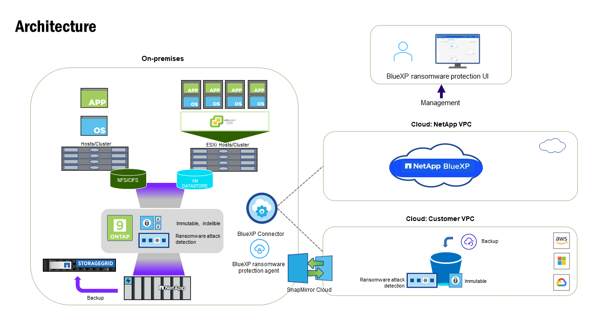

Manos a la obra
Manos a la obra
Obtén más información sobre la versión previa de la protección frente al ransomware de BlueXP
 Sugerir cambios
Sugerir cambios
Los ataques de ransomware pueden bloquear el acceso a tus sistemas y los datos, y los atacantes pueden solicitar un rescate a cambio de la liberación de datos o descifrado. Según IDC, no es raro que las víctimas de ransomware sufran múltiples ataques de ransomware. El ataque puede interrumpir el acceso a los datos entre un día y varias semanas.
La protección frente al ransomware de BlueXP es un servicio de orquestación para la protección, detección y recuperación de ransomware. Para la versión de vista previa, el servicio protege las cargas de trabajo basadas en aplicaciones de Oracle, MySQL, almacenes de datos de máquinas virtuales, también se pueden compartir archivos en el almacenamiento NAS en las instalaciones, así como en Cloud Volumes ONTAP en Amazon Web Services (mediante el protocolo NFS) en cuentas de BlueXP y se realizan backups de los datos en el almacenamiento en cloud de Amazon Web Services o en NetApp StorageGRID.

|
ESTA DOCUMENTACIÓN SE PROPORCIONA COMO UNA PREVISUALIZACIÓN TECNOLÓGICA. Con esta oferta de vista previa, NetApp se reserva el derecho de modificar los detalles, el contenido y la línea de tiempo de la oferta antes de la disponibilidad general. |
Todo lo que puedes hacer con la protección frente al ransomware de BlueXP
El servicio de protección frente a ransomware de BlueXP proporciona un uso completo de diversas tecnologías de NetApp para que el administrador de almacenamiento, el administrador de seguridad de los datos o el ingeniero de operaciones de seguridad puedan lograr los siguientes objetivos:
-
Identifica todas las cargas de trabajo basadas en aplicaciones, de uso compartido o gestionadas por VMware en el NAS on-premises de NetApp con entornos de trabajo NFS en BlueXP, en cuentas de BlueXP, espacios de trabajo y conectores BlueXP. A continuación, el servicio categoriza la prioridad de los datos y te ofrece recomendaciones para llevar a cabo mejoras en la protección frente a ransomware.
-
Proteja sus cargas de trabajo habilitando copias de seguridad y copias snapshot en sus datos.
-
Detectar anomalías que podrían ser ataques de ransomware.
-
* Responder* a posibles ataques de ransomware iniciando automáticamente una copia snapshot de NetApp ONTAP.
-
* Recuperar* sus cargas de trabajo que ayudan a acelerar el tiempo de actividad de la carga de trabajo mediante la orquestación de varias tecnologías de NetApp. Puede optar por recuperar volúmenes, carpetas o archivos específicos. El servicio ofrece recomendaciones sobre las mejores opciones.

Beneficios de usar la protección frente al ransomware de BlueXP
La protección frente al ransomware de BlueXP ofrece las siguientes ventajas:
-
Detecta las cargas de trabajo y los conjuntos de datos, analiza la prioridad en función del índice de uso y clasifica su importancia relativa.
-
Evalúa tu posición de protección frente al ransomware y lo muestra en una consola fácil de entender.
-
Proporciona recomendaciones sobre los siguientes pasos según el análisis de la postura de detección y protección.
-
Aplica recomendaciones de protección de datos impulsadas por IA/ML con acceso con un solo clic.
-
Protege los datos en las principales cargas de trabajo basadas en aplicaciones, como MySQL, Oracle, almacenes de datos de VMware y recursos compartidos de archivos.
-
Detecta ataques de ransomware en datos en tiempo real en almacenamiento principal mediante tecnología de IA.
-
Inicia acciones automatizadas en respuesta a posibles ataques detectados creando copias Snapshot e iniciando alertas sobre actividad anormal.
-
Aplica una recuperación selectiva para cumplir con las políticas del objetivo de punto de recuperación. La protección contra ransomware de BlueXP orquesta la recuperación de incidentes de ransomware mediante diversos servicios de recuperación de NetApp, incluidos el backup y la recuperación de datos de BlueXP (anteriormente Cloud Backup).
Coste
NetApp no te cobra por usar la versión preliminar de la protección contra ransomware de BlueXP.
Licencia
La versión previa de la protección contra ransomware de BlueXP no requiere ninguna licencia especial. Todas las licencias de vista previa son licencias de evaluación.

|
Para la versión de vista previa, NetApp ayuda a configurar la evaluación y las licencias necesarias. |
La vista previa de la protección contra ransomware de BlueXP requiere las siguientes licencias:
-
ONTAP
-
Tecnología autónoma de protección frente a ransomware de NetApp. Consulte "Información general sobre la protección de ransomware autónoma" para obtener más detalles.
-
Servicio de backup y recuperación de datos de BlueXP
Funcionamiento de la protección frente al ransomware de BlueXP
En un nivel alto, la protección contra el ransomware de BlueXP funciona así.

| Función | Descripción |
|---|---|
IDENTIFICAR |
|
PROTEGER |
|
DETECTAR |
|
RESPONDER |
|
RECUPERAR |
|
Destinos de copia de seguridad, entornos de trabajo y orígenes de datos compatibles
Utiliza la vista previa de la protección de ransomware de BlueXP para ver lo resilientes que son tus datos ante un ciberataque a los siguientes tipos de destinos de backup, entornos de trabajo y fuentes de datos:
Destinos de copia de seguridad soportados
-
Amazon Web Services (AWS) S3
-
StorageGRID de NetApp
-
Entornos de trabajo compatibles *
-
NAS de ONTAP en las instalaciones (con el protocolo NFS)
-
ONTAP Select
-
Cloud Volumes ONTAP en AWS (con el protocolo NFS)
Fuentes de datos
Para la versión de vista previa, el servicio protege las siguientes cargas de trabajo basadas en aplicaciones:
-
Recursos compartidos de archivos NetApp
-
Almacenes de datos VMware
-
Bases de datos (para la versión preliminar, Oracle y MySQL)
Términos que pueden ayudarte con la protección contra el ransomware
Te puedes beneficiar si comprendes alguna terminología en lo que respecta a la protección contra ransomware.
-
Protección: La protección en la protección contra ransomware de BlueXP significa garantizar que las copias Snapshot y las copias de seguridad inmutables se produzcan de forma regular en un dominio de seguridad diferente mediante políticas de protección.
-
Carga de trabajo: Una carga de trabajo en la vista previa de protección contra ransomware de BlueXP puede incluir bases de datos MySQL u Oracle, almacenes de datos de VMware o recursos compartidos de archivos.